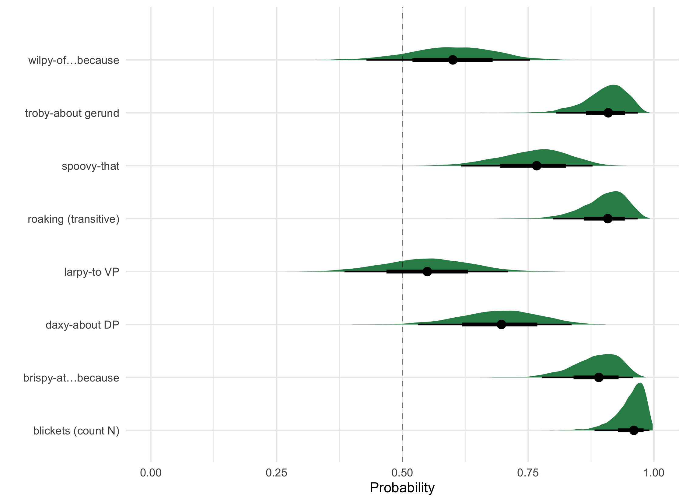
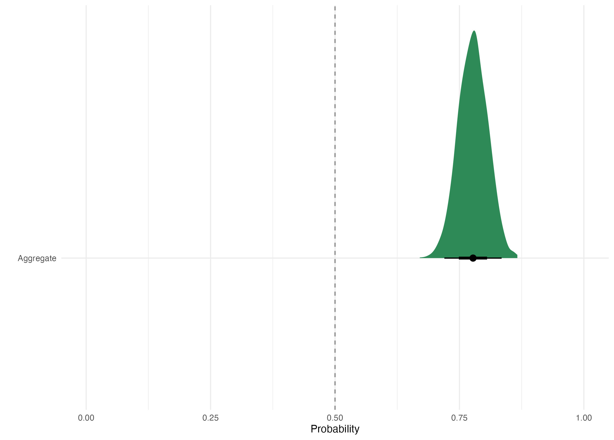

Experiment 3
Overview
- Forced Choice Referent Selection You can preview the current version of the task here, if you’re interested. (We’ll be running two follow-up versions, manipulating the lexical prompt before the test phase.)
Task: Participants were presented with a brief video featuring a target novel word, then asked to use this information to make a selection between two referents at test. Only 1 condition run (so far).
Statistical Analysis
In order to find the probability of choosing an animate referent, a binomial logistic regression was run. The fixed effect predictor was condition (8 levels: blickets (count N), daxy-about DP, wilpy-of…because, spoovy-that, troby-about gerund, brispy-at…because, larpy-to VP, roaking (transitive). All model priors were the default in brms, a student’s T distribution with 3 degree of freedom. All models were fit with 4000 iterations (1000 warm-up). Hamiltonian Monte-Carlo sampling was carried out with 6 chains distributed between 6 processing cores
-compare each target adjective trial to chance level (chance=.5, likeliness to guess emot. adj)
Figure 1 shows the probability of choosing an animate referent in each condition. Almost every condition is reliably choosing the animate referent above chance.
-compare target trials in aggregate to chance level (chance=.5, likeliness to guess emot. adj)
Figure 2 shows the aggregate of these individual estimates. Overall, the probability of choosing the animate referent was .78 [95% HDI .72-.84].

-compare across target adjective trials (Chi-sq, more restrictive/informative frames?)
I am unsure about this - How is it different from 1?